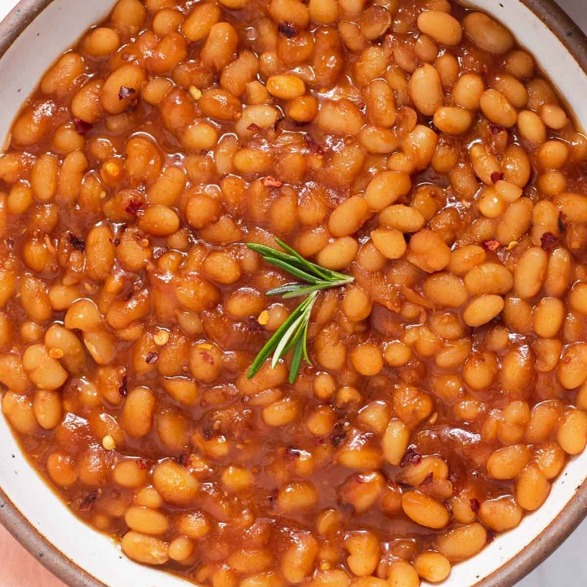

Baked Beans
Simple Baked Beans Recipe
Prep: 10 mins
|
Cook: 1 hr
|
Total: 1 hr 10 mins
Description
Baked beans is a dish traditionally containing white beans which are parboiled and then baked at a low temperature for a lengthy period of time in some sort of sauce.
Ingredients
- 1/2 pound bacon, chopped
- 1 onion, finely diced
- 2 cans of baked beans
- 1/4 cup brown sugar
- 1/4 cup ketchup
- 1/4 cup prepared mustard, or to taste
Steps
- Place bacon in a large, deep skillet.
- Cook over medium high heat until evenly brown.
- Add the onion and saute until tender.
- Drain excess oil, if desired
- Stir in beans, brown sugar, ketchup, and mustard.
- Cook, stirring occasionally, until bubbly.